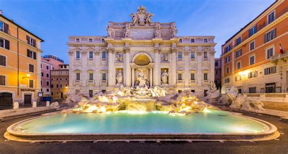
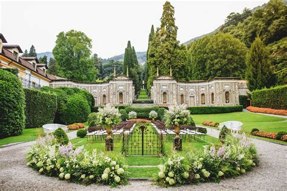

Lazio
Panoramica
Il Lazio è una regione del centro Italia, famosa per la sua capitale, Roma, cuore della civiltà romana e sede della Città del Vaticano. La regione offre una combinazione unica di storia, arte, natura e gastronomia.
Fatti in Breve
- Capoluogo: Roma
- Lingua: Italiano
- Popolazione: Circa 5,7 milioni
- Famosa per: Roma antica, Vaticano, cucina tradizionale
- Curiosità: Roma è l’unica città al mondo che ospita un altro Stato al suo interno!
Piatti Tipici
Carbonara
Amatriciana

Saltimbocca alla romana

Coda alla vaccinara

Luoghi Famosi
Colosseo

Fontana di Trevi

Città del Vaticano

Villa d'Este

Castelli Romani

Quando Visitare
Primavera e autunno sono i periodi migliori per visitare il Lazio: il clima è mite e le città meno affollate. L’estate è vivace ma calda, mentre l’inverno è perfetto per chi ama esplorare con tranquillità.
Simboli Regionali
- Bandiera:
- Stemma: